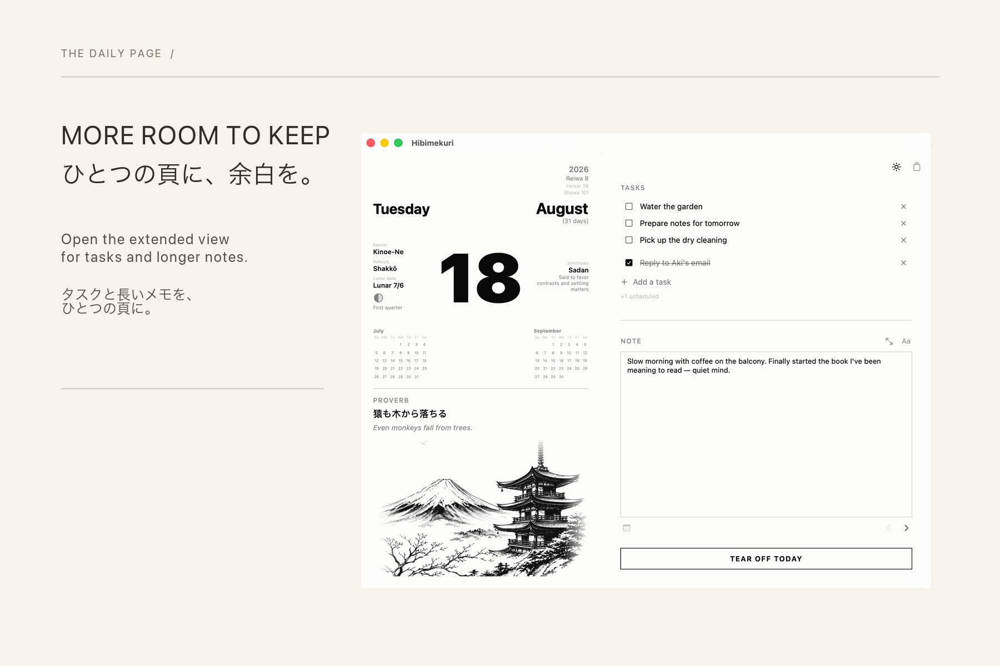
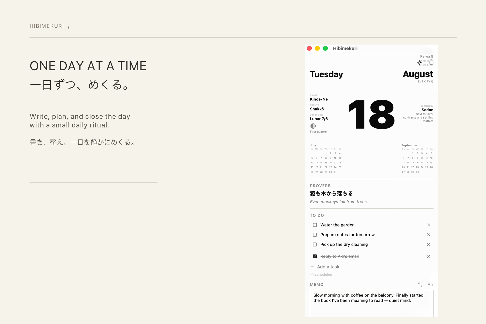
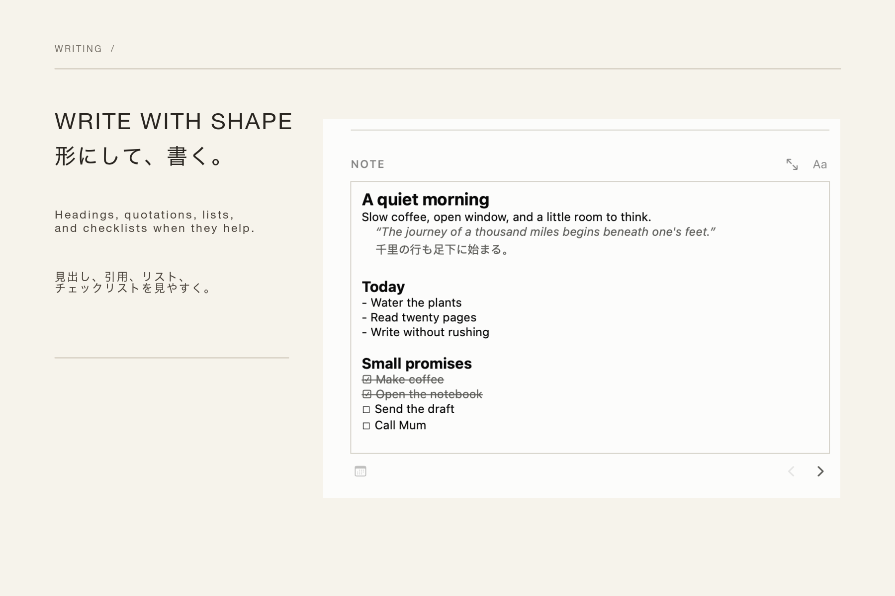
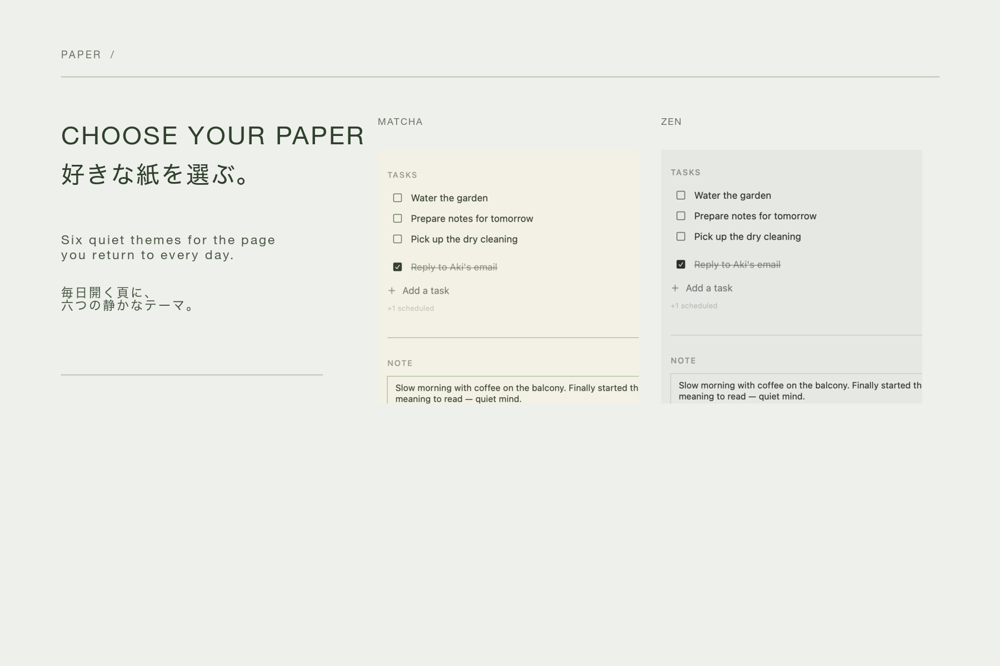

THE DAILY PAGE
More room to keep.
ひとつの頁に、余白を。
Open the extended page for tasks and longer notes, while the calendar, almanac, and daily writing remain in one calm view.

A DAILY PAGE FOR MACOS
日々めくり
Turn the page, keep the day.
A quiet place to write, plan, and close each day with intention.

THE HIMEKURI
一日ずつ、めくる。
Himekuri calendars give one day their full attention. Hibimekuri brings that small ritual to your Mac: write what mattered, tend to what is next, then tear off the page when the day is complete.
THE DAILY PAGE
ひとつの頁に、余白を。
Open the extended page for tasks and longer notes, while the calendar, almanac, and daily writing remain in one calm view.

WRITING
形にして、書く。
Use formatted writing when you want clarity, or switch to Markdown when you want the page in plain text.

PAPER THEMES
好きな紙を選ぶ。
Six quiet themes let the daily page feel personal without distracting from the day itself.

YOURS TO KEEP
Your entries and tasks stay on your Mac as plain JSON files. No account, no backend, no analytics.